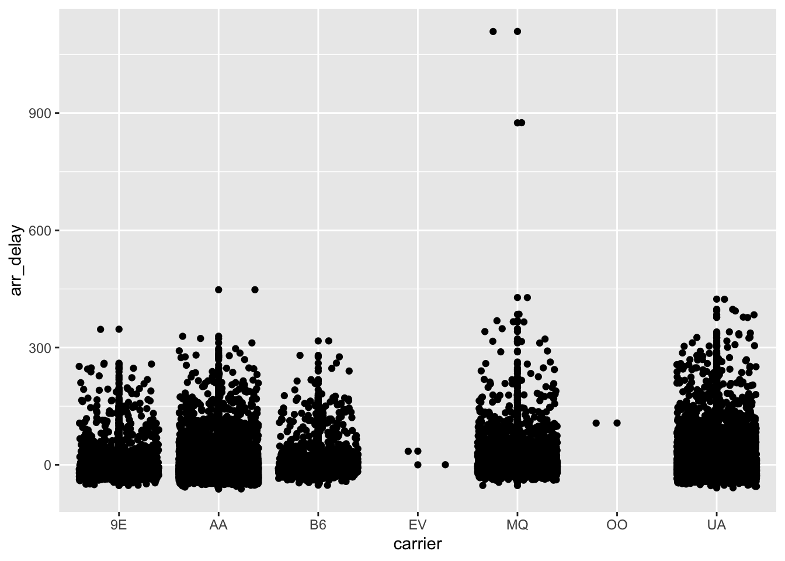

install.package("reticulate")Pre-lecture materials
Read ahead
Read ahead
Before class, you can prepare by reading the following materials:
Acknowledgements
Material for this lecture was borrowed and adopted from
Learning objectives
Learning objectives
At the end of this lesson you will:
- Install the
reticulateR package on your machine (I’m assuming you have python installed already) - Learn about
reticulateto work interoperability between Python and R - Be able to translate between R and Python objects
Python for R Users
As the number of computational and statistical methods for the analysis data continue to increase, you will find many will be implemented in other languages.
Often Python is the language of choice.
Python is incredibly powerful and I increasingly interact with it on very frequent basis these days. To be able to leverage software tools implemented in Python, today I am giving an overview of using Python from the perspective of an R user.
Overview
For this lecture, we will be using the reticulate R package, which provides a set of tools for interoperability between Python and R. The package includes facilities for:
- Calling Python from R in a variety of ways including (i) R Markdown, (ii) sourcing Python scripts, (iii) importing Python modules, and (iv) using Python interactively within an R session.
- Translation between R and Python objects (for example, between R and Pandas data frames, or between R matrices and NumPy arrays).

[Source: Rstudio]
Pro-tip for installing python
Installing python: If you would like recommendations on installing python, I like these resources:
- Py Pkgs: https://py-pkgs.org/02-setup#installing-python
- my fav: Using conda environments with mini-forge: https://github.com/conda-forge/miniforge
- from
reticulate: https://rstudio.github.io/reticulate/articles/python_packages.html
What’s happening under the hood?: reticulate embeds a Python session within your R session, enabling seamless, high-performance interoperability.
If you are an R developer that uses Python for some of your work or a member of data science team that uses both languages, reticulate can make your life better!
Install reticulate
Let’s try it out. Before we get started, you will need to install the packages:
We will also load the here and tidyverse packages for our lesson:
library(here)
library(tidyverse)
library(reticulate)python path
If python is not installed on your computer, you can use the install_python() function from reticulate to install it.
If python is already installed, by default, reticulate uses the version of Python found on your PATH
Sys.which("python3") python3
"/usr/bin/python3" The use_python() function enables you to specify an alternate version, for example:
use_python("/usr/<new>/<path>/local/bin/python")For example, I can define the path explicitly:
use_python("/opt/homebrew/Caskroom/miniforge/base/bin/python")You can confirm that reticulate is using the correct version of python that you requested using the py_discover_config function:
py_discover_config()python: /opt/homebrew/Caskroom/miniforge/base/bin/python
libpython: /opt/homebrew/Caskroom/miniforge/base/lib/libpython3.9.dylib
pythonhome: /opt/homebrew/Caskroom/miniforge/base:/opt/homebrew/Caskroom/miniforge/base
version: 3.9.10 | packaged by conda-forge | (main, Feb 1 2022, 21:27:43) [Clang 11.1.0 ]
numpy: /opt/homebrew/Caskroom/miniforge/base/lib/python3.9/site-packages/numpy
numpy_version: 1.23.0
NOTE: Python version was forced by RETICULATE_PYTHONCalling Python in R
There are a variety of ways to integrate Python code into your R projects:
Python in R Markdown — A new Python language engine for R Markdown that supports bi-directional communication between R and Python (R chunks can access Python objects and vice-versa).
Importing Python modules — The
import()function enables you to import any Python module and call its functions directly from R.Sourcing Python scripts — The
source_python()function enables you to source a Python script the same way you wouldsource()an R script (Python functions and objects defined within the script become directly available to the R session).Python REPL — The
repl_python()function creates an interactive Python console within R. Objects you create within Python are available to your R session (and vice-versa).
Below I will focus on introducing the first and last one. However, before we do that, let’s introduce a bit about python basics.
Python basics
Python is a high-level, object-oriented programming language useful to know for anyone analyzing data.
The most important thing to know before learning Python, is that in Python, everything is an object.
- There is no compiling and no need to define the type of variables before using them.
- No need to allocate memory for variables.
- The code is very easy to learn and easy to read (syntax).
There is a large scientific community contributing to Python. Some of the most widely used libraries in Python are numpy, scipy, pandas, and matplotlib.
start python
There are two modes you can write Python code in: interactive mode or script mode. If you open up a UNIX command window and have a command-line interface, you can simply type python (or python3) in the shell:
python3and the interactive mode will open up. You can write code in the interactive mode and Python will interpret the code using the python interpreter.
Another way to pass code to Python is to store code in a file ending in .py, and execute the file in the script mode using
python3 myscript.pyTo check what version of Python you are using, type the following in the shell:
python3 --versionR or python via terminal
(Demo in class)
objects in python
Everything in Python is an object. Think of an object as a data structure that contains both data as well as functions. These objects can be variables, functions, and modules which are all objects. We can operate on this objects with what are called operators (e.g. addition, subtraction, concatenation or other operations), define/apply functions, test/apply for conditionals statements, (e.g. if, else statements) or iterate over the objects.
Not all objects are required to have attributes and methods to operate on the objects in Python, but everything is an object (i.e. all objects can be assigned to a variable or passed as an argument to a function). A user can work with built-in defined classes of objects or can create new classes of objects. Using these objects, a user can perform operations on the objects by modifying / interacting with them.
variables
Variable names are case sensitive, can contain numbers and letters, can contain underscores, cannot begin with a number, cannot contain illegal characters and cannot be one of the 31 keywords in Python:
“and, as, assert, break, class, continue, def, del, elif, else, except, exec, finally, for, from, global, if, import, in, is, lambda, not, or, pass, print, raise, return, try, while, with, yield”
operators
- Numeric operators are
+,-,*,/,**(exponent),%(modulus if applied to integers) - String and list operators:
+and*. - Assignment operator:
= - The augmented assignment operator
+=(or-=) can be used liken += xwhich is equal ton = n + x - Boolean relational operators:
==(equal),!=(not equal),>,<,>=(greater than or equal to),<=(less than or equal to) - Boolean expressions will produce True or False
- Logical operators:
and,or, andnot. e.g.x > 1 and x <= 5
2 ** 38x = 3
x > 1 and x <= 5TrueAnd in R, the execution changes from Python to R seamlessly
2^3 [1] 8x = 3
x > 1 & x <=5[1] TRUEformat operators
If % is applied to strings, this operator is the format operator. It tells Python how to format a list of values in a string. For example,
%dsays to format the value as an integer%gsays to format the value as an float%ssays to format the value as an string
print('In %d days, I have eaten %g %s.' % (5, 3.5, 'cupcakes'))In 5 days, I have eaten 3.5 cupcakes.functions
Python contains a small list of very useful built-in functions.
All other functions need defined by the user or need to be imported from modules.
Pro-tip
For a more detailed list on the built-in functions in Python, see Built-in Python Functions.
The first function we will discuss, type(), reports the type of any object, which is very useful when handling multiple data types (remember, everything in Python is an object). Here are some the mains types you will encounter:
- integer (
int) - floating-point (
float) - string (
str) - list (
list) - dictionary (
dict) - tuple (
tuple) - function (
function) - module (
module) - boolean (
bool): e.g. True, False - enumerate (
enumerate)
If we asked for the type of a string “Let’s go Ravens!”
type("Let's go Ravens!")<class 'str'>This would return the str type.
You have also seen how to use the print() function. The function print will accept an argument and print the argument to the screen. Print can be used in two ways:
print("Let's go Ravens!")[1] "Let's go Ravens!"new functions
New functions can be defined using one of the 31 keywords in Python def.
def new_world():
return 'Hello world!'
print(new_world())Hello world!The first line of the function (the header) must start with def, the name of the function (which can contain underscores), parentheses (with any arguments inside of it) and a colon. The arguments can be specified in any order.
The rest of the function (the body) always has an indentation of four spaces. If you define a function in the interactive mode, the interpreter will print ellipses (…) to let you know the function is not complete. To complete the function, enter an empty line (not necessary in a script).
To return a value from a function, use return. The function will immediately terminate and not run any code written past this point.
def squared(x):
""" Return the square of a
value """
return x ** 2
print(squared(4))16
Note
python has its version of ... (also from docs.python.org)
def concat(*args, sep="/"):
return sep.join(args)
concat("a", "b", "c")'a/b/c'iteration
Iterative loops can be written with the for, while and break statements.
Defining a for loop is similar to defining a new function.
- The header ends with a colon and the body is indented.
- The function
range(n)takes in an integernand creates a set of values from0ton - 1.
for i in range(3):
print('Baby shark, doo doo doo doo doo doo!')Baby shark, doo doo doo doo doo doo!
Baby shark, doo doo doo doo doo doo!
Baby shark, doo doo doo doo doo doo!print('Baby shark!')Baby shark!for loops are not just for counters, but they can iterate through many types of objects such as strings, lists and dictionaries.
The function len() can be used to:
- Calculate the length of a string
- Calculate the number of elements in a list
- Calculate the number of items (key-value pairs) in a dictionary
- Calculate the number elements in the tuple
x = 'Baby shark!'
len(x)11methods for each type of object (dot notation)
For strings, lists and dictionaries, there are set of methods you can use to manipulate the objects. In general, the notation for methods is the dot notation.
The syntax is the name of the object followed by a dot (or period) followed by the name of the method.
x = "Hello Baltimore!"
x.split()['Hello', 'Baltimore!']Data structures
We have already seen lists. Python has other data structures built in.
- Sets
{"a", "a", "a", "b"}(unique elements) - Tuples
(1, 2, 3)(a lot like lists but not mutable, i.e. need to create a new to modify) - Dictionaries
dict = {"a" : 1, "b" : 2}
dict['a']1dict['b']2More about data structures can be founds at the python docs
reticulate
Python engine within R Markdown
The reticulate package includes a Python engine for R Markdown with the following features:
Run Python chunks in a single Python session embedded within your R session (shared variables/state between Python chunks)
Printing of Python output, including graphical output from
matplotlib.Access to objects created within Python chunks from R using the
pyobject (e.g.py$xwould access anxvariable created within Python from R).Access to objects created within R chunks from Python using the
robject (e.g.r.xwould access toxvariable created within R from Python)
From Python to R
As an example, you can use Pandas to read and manipulate data then easily plot the Pandas data frame using ggplot2:
Let’s first create a flights.csv dataset in R and save it using write_csv from readr:
# checks to see if a folder called "data" exists; if not, it installs it
if(!file.exists(here("data"))){
dir.create(here("data"))
}
# checks to see if a file called "flights.csv" exists; if not, it saves it to the data folder
if(!file.exists(here("data", "flights.csv"))){
readr::write_csv(nycflights13::flights,
file = here("data", "flights.csv"))
}
nycflights13::flights %>%
head()# A tibble: 6 × 19
year month day dep_time sched_dep…¹ dep_d…² arr_t…³ sched…⁴ arr_d…⁵ carrier
<int> <int> <int> <int> <int> <dbl> <int> <int> <dbl> <chr>
1 2013 1 1 517 515 2 830 819 11 UA
2 2013 1 1 533 529 4 850 830 20 UA
3 2013 1 1 542 540 2 923 850 33 AA
4 2013 1 1 544 545 -1 1004 1022 -18 B6
5 2013 1 1 554 600 -6 812 837 -25 DL
6 2013 1 1 554 558 -4 740 728 12 UA
# … with 9 more variables: flight <int>, tailnum <chr>, origin <chr>,
# dest <chr>, air_time <dbl>, distance <dbl>, hour <dbl>, minute <dbl>,
# time_hour <dttm>, and abbreviated variable names ¹sched_dep_time,
# ²dep_delay, ³arr_time, ⁴sched_arr_time, ⁵arr_delayNext, we use Python to read in the file and do some data wrangling
import pandas
flights_path = "/Users/stephaniehicks/Documents/github/teaching/jhustatcomputing2022/data/flights.csv"
flights = pandas.read_csv(flights_path)
flights = flights[flights['dest'] == "ORD"]
flights = flights[['carrier', 'dep_delay', 'arr_delay']]
flights = flights.dropna()
flights carrier dep_delay arr_delay
5 UA -4.0 12.0
9 AA -2.0 8.0
25 MQ 8.0 32.0
38 AA -1.0 14.0
57 AA -4.0 4.0
... ... ... ...
336645 AA -12.0 -37.0
336669 UA -7.0 -13.0
336675 MQ -7.0 -11.0
336696 B6 -5.0 -23.0
336709 AA -13.0 -38.0
[16566 rows x 3 columns]head(py$flights) carrier dep_delay arr_delay
5 UA -4 12
9 AA -2 8
25 MQ 8 32
38 AA -1 14
57 AA -4 4
70 UA 9 20py$flights_path [1] "/Users/stephaniehicks/Documents/github/teaching/jhustatcomputing2022/data/flights.csv"class(py$flights)[1] "data.frame"class(py$flights_path)[1] "character"Next, we can use R to visualize the Pandas DataFrame.
The data frame is loaded in as an R object now stored in the variable py.
ggplot(py$flights, aes(x = carrier, y = arr_delay)) +
geom_point() +
geom_jitter()
Note
The reticulate Python engine is enabled by default within R Markdown whenever reticulate is installed.
From R to Python
Use R to read and manipulate data
library(tidyverse)
flights <- read_csv(here("data","flights.csv")) %>%
filter(dest == "ORD") %>%
select(carrier, dep_delay, arr_delay) %>%
na.omit()Rows: 336776 Columns: 19
── Column specification ────────────────────────────────────────────────────────
Delimiter: ","
chr (4): carrier, tailnum, origin, dest
dbl (14): year, month, day, dep_time, sched_dep_time, dep_delay, arr_time, ...
dttm (1): time_hour
ℹ Use `spec()` to retrieve the full column specification for this data.
ℹ Specify the column types or set `show_col_types = FALSE` to quiet this message.flights# A tibble: 16,566 × 3
carrier dep_delay arr_delay
<chr> <dbl> <dbl>
1 UA -4 12
2 AA -2 8
3 MQ 8 32
4 AA -1 14
5 AA -4 4
6 UA 9 20
7 UA 2 21
8 AA -6 -12
9 MQ 39 49
10 B6 -2 15
# … with 16,556 more rowsUse Python to print R dataframe
If you recall, we can access objects created within R chunks from Python using the r object (e.g. r.x would access to x variable created within R from Python).
We can then ask for the first ten rows using the head() function in python.
r.flights.head(10) carrier dep_delay arr_delay
0 UA -4.0 12.0
1 AA -2.0 8.0
2 MQ 8.0 32.0
3 AA -1.0 14.0
4 AA -4.0 4.0
5 UA 9.0 20.0
6 UA 2.0 21.0
7 AA -6.0 -12.0
8 MQ 39.0 49.0
9 B6 -2.0 15.0import python modules
You can use the import() function to import any Python module and call it from R. For example, this code imports the Python os module in python and calls the listdir() function:
os <- import("os")
os$listdir(".")[1] ".Rhistory" "index.qmd" "index_files" "index.rmarkdown"Functions and other data within Python modules and classes can be accessed via the $ operator (analogous to the way you would interact with an R list, environment, or reference class).
Imported Python modules support code completion and inline help:

[Source: Rstudio]
Similarly, we can import the pandas library:
pd <- import('pandas')
test <- pd$read_csv(here("data","flights.csv"))
head(test) year month day dep_time sched_dep_time dep_delay arr_time sched_arr_time
1 2013 1 1 517 515 2 830 819
2 2013 1 1 533 529 4 850 830
3 2013 1 1 542 540 2 923 850
4 2013 1 1 544 545 -1 1004 1022
5 2013 1 1 554 600 -6 812 837
6 2013 1 1 554 558 -4 740 728
arr_delay carrier flight tailnum origin dest air_time distance hour minute
1 11 UA 1545 N14228 EWR IAH 227 1400 5 15
2 20 UA 1714 N24211 LGA IAH 227 1416 5 29
3 33 AA 1141 N619AA JFK MIA 160 1089 5 40
4 -18 B6 725 N804JB JFK BQN 183 1576 5 45
5 -25 DL 461 N668DN LGA ATL 116 762 6 0
6 12 UA 1696 N39463 EWR ORD 150 719 5 58
time_hour
1 2013-01-01T10:00:00Z
2 2013-01-01T10:00:00Z
3 2013-01-01T10:00:00Z
4 2013-01-01T10:00:00Z
5 2013-01-01T11:00:00Z
6 2013-01-01T10:00:00Zclass(test)[1] "data.frame"or the scikit-learn python library:
skl_lr <- import("sklearn.linear_model")
skl_lrModule(sklearn.linear_model)Calling python scripts
source_python("secret_functions.py")
subject_1 <- read_subject("secret_data.csv")Calling the python repl
If you want to work with Python interactively you can call the repl_python() function, which provides a Python REPL embedded within your R session.
repl_python()Objects created within the Python REPL can be accessed from R using the py object exported from reticulate. For example:

[Source: Rstudio]
i.e. objects do have permenancy in R after exiting the python repl.
So typing x = 4 in the repl will put py$x as 4 in R after you exit the repl.
Enter exit within the Python REPL to return to the R prompt.
Post-lecture materials
Final Questions
Here are some post-lecture questions to help you think about the material discussed.
Questions
- Try to use tab completion for a function.
- Try to install and load a different python module in R using
import().